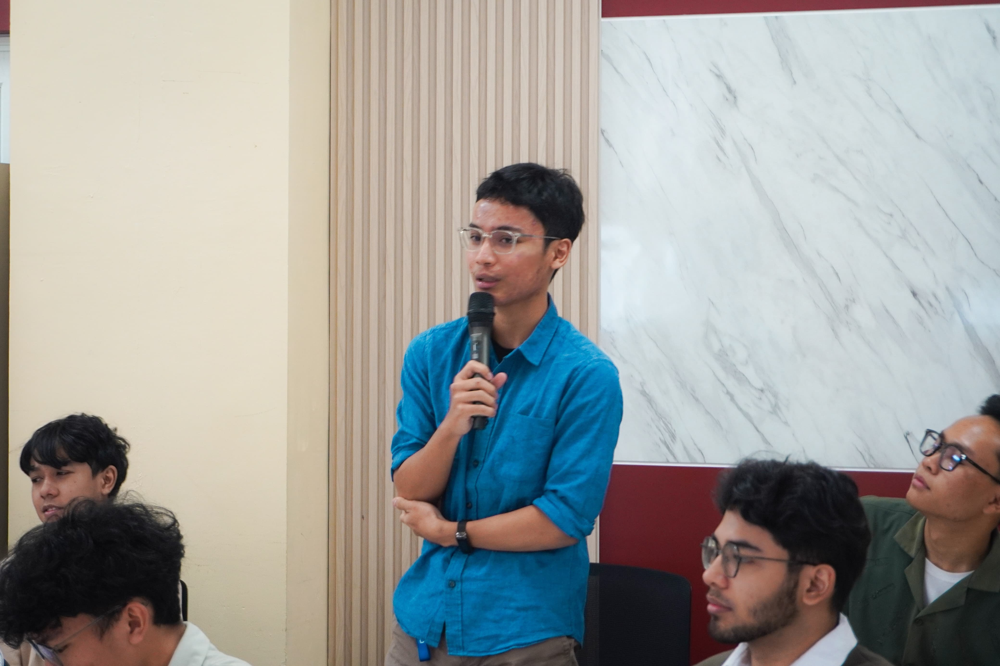

Tentang saya

Saya mahasiswa Program Studi Informatika, Fakultas Teknologi Industri, Universitas Islam Indonesia, berdomisili di Yogyakarta. Saya berfokus pada UI/UX design dan frontend development dengan Figma serta React/Next.js, dan sedang mendalami pengembangan aplikasi berbantuan AI.
| Kegiatan | Peran | Waktu |
|---|---|---|
| Jogja Information Technology Session UGM 2026 | Peserta | |
| GEMASTIK XIX 2026 | Anggota tim | |
| DWDG UII 2026 | Kandidat, tahap wawancara |
Perjalanan saya
- mulai kuliah di Informatika UII.
- mulai serius belajar UI/UX di Figma.
- Bergabung dan mengikuti GDGOoC UII sebagai member.
- Mengikuti lomba Apple Swift Student Challenge 2026.
- Mengikuti GEMASTIK XIX 2026.
Karya saya
- Relay papan Kanban kolaboratif real-time, proyek portofolio.
- NARASI aplikasi web dokumentasi klinis berbantuan AI, GEMASTIK XIX 2026.
- SQLQuest aplikasi SwiftUI yang mengajarkan JOIN SQL lewat permainan.
Keterampilan
- UI/UX Design
- Figma wireframe, prototyping, dan design system sederhana.
- Frontend Development
- HTML semantik, CSS dengan design token, React dan Next.js serta Swift dengan Xcode
- Lainnya
- Python untuk kebutuhan data, dan mulai belajar workflow AI-assisted development.
Hubungi saya
Isi formulir berikut. Semua kolom bertanda wajib harus diisi.
Tanya jawab
Apa yang sedang saya pelajari?
CSS fundamental dan cara menyusun tampilan yang konsisten lewat design token dua lapis.
Alat apa yang saya pakai sehari-hari?
Figma untuk desain, VS Code dan Chrome DevTools untuk kode — F12 selalu terbuka saat menata tampilan.
Apa arah karier yang sedang saya rintis?
UI/UX design yang bersambung ke frontend development, dengan ketertarikan pada perkakas berbantuan AI.